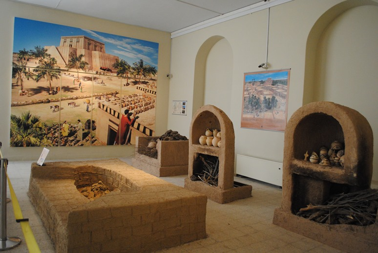
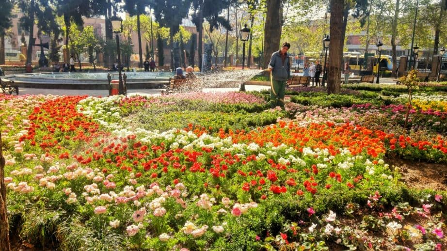

يقع متحف ايران الوطني National Museum of Iran في العاصمة طهران ، وهو عبارة عن مؤسسة تاريخية عريقة مكونة من مُجمعين هما متحف إيران القديم الذي افتُتح في عام 1937، والمُجمع الآخر هو متحف عصر ما بعد العصر الإسلامي الذي افتتح عام 1972، ويُعد هذا المتحف بملحقاته واحدًا من أبرز الاماكن السياحية في ايران طهران

المتحف يمتلئ بالآثار التاريخية الإيرانية القديمة التي تعود لعصور القرون الوسطى وما قبلها، مُقسمة إلى عدة أقسام وعصور أهما العصر الحجري القديم، ومركز دراسات الفخار

أنشطة في متحف إيران الوطني طهران
التجول في المتحف والتعرف على معروضاته سواء بالحقبة القديمة أو حقبة الإسلام والتعرف على تاريخ ايران وثقافتها والموروث التقليدي الخاص بهم بالثقافة الفارسية
التمتع بمشاهدة اللوحات الفنية، والقطع الأثرية الناردة بداخله من الفخار والمنحوتات الفارسية القديمة الجميلة، وهناك قسم خاص بالمخطوطات وآخر بالسجاد ستشعرون كما لو كنت تمشون في ايران القديمة في عصور ازدهارها
المتحف يحتضن أيضًا عدد كبير من المعارض المؤقتة بشكلٍ سنوي، يُمكنك زيارتة أحدها لتتمكن من مُشاهدة عدد كبير من المُقتنيات والأعمال الفنية القيمة المعاصرة من لوحات وخزف وقطع السجاد المذهلة بنقوشها الجذابة
يُحيط بالمتحف حديقة غناء واسعة يُمكنك أن تحظى بوقت رائع من الاسترخاء والهدوء بداخلها، كما يتخللها ممرات واسعة لكي تُسهل على المارة عمليات التنقل والمشي

التقاط الصور التذكارية عند زيارتك إلى متحف إيران الوطني أمر غاية في الأهمية، لن تكفو عن التقاط الصور للمقتنيات أو المتحف بشكل عام ولكم مع أصدقائكم كصورة جميلة تحتفظون بها
يحيط بالمتحف العديد من الأكشاك المفتوحة طوال ساعت اليوم منها ما هو مختص بالاكل والأكلات الشعبية والحلويات المحلية الشهية والأطعمة الجاهزة وهناك مجموعة من الرسامين تجدهم هناك مستعدون لرسم لوحة فنية لك بثمن مناسب
: ساعات العمل
طوال أيام الأسبوع من 9 صباحًا حتى 6.45 مساءً
الدخول مجاني لجميع الأفراد